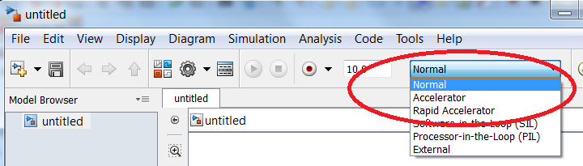
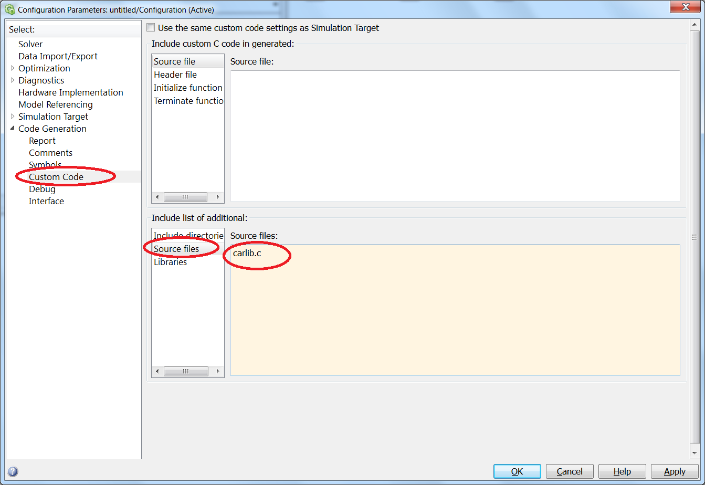
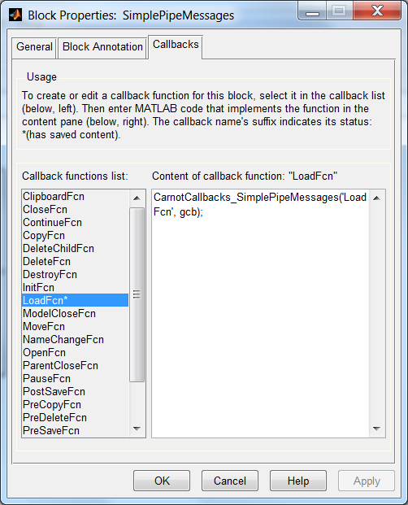
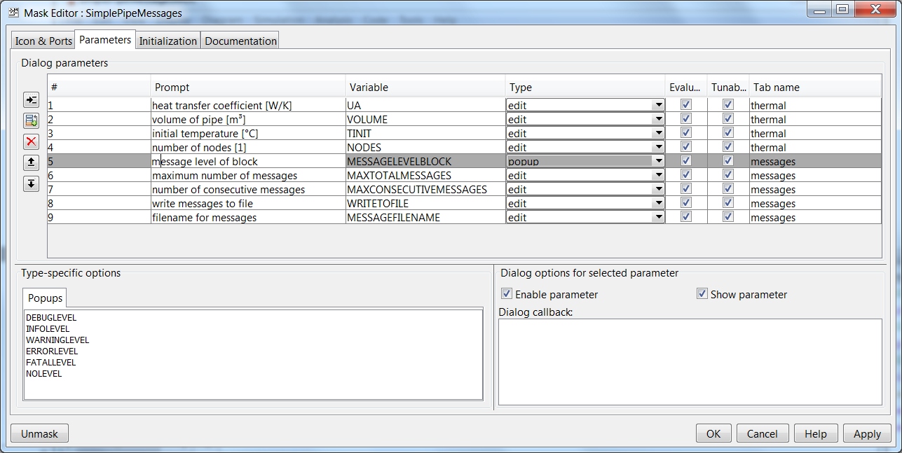
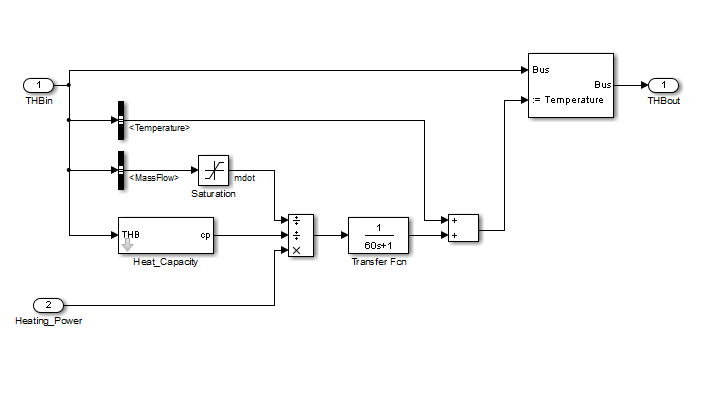

with the variables
Simulink offers an interface to C code.
C code in Simulink has some advantages:
Of course, there are some disadvantages as well:
Preparation
In order to compile the C code, you need a compiler, e.g. the Microsoft SDK 7.1.
If you face problems while installing the SDK, please visit the webpage
http://msdn.microsoft.com/en-us/vstudio//gg697159.
After installation, enter
mex -setup
at the Matlab prompt and choose
the right compiler. Now Matlab and Simulink are ready to use C code.
Important differences between Matlab and C
Example S-Function
There are several S-function examples included in Simulink. Unfortunately, all
these examples are not self-explanatory. In order to find a good starting point,
consider the example S-function ExampleSFunction.c. Change to the directory of the
example. Type
mex ExampleSFunction.c
Please remember that Simulink is case
sensitive. If you do not consider this, the code will be compiled, because Windows
is not case sensitive. However, Simulink will crash if you run a model including
the S-function in this case. After compiling a file ExampleSFunction.mexw64 or ExampleSFunction.mexw32
will appear in your directory. This file is actually a dynamic link library (DLL),
which will be included by Simulink.
Now you can open the the Simulink example
model. In the upper part, the S-function is incorporated, in the lower part the
same functionality with Simulink is implemented.
As you can see, there are two different outputs:
If you run the model, you can observe that the same numbers appear in the upper
and the lower part.
Please double click on the S-function block. Here the
S-function's parameters (here only one parameter "1", which is p0) are
defined. If you click on "edit" the source code
of the S-function will
opened. The code is well documented, so that only a brief description is given here.
In general, an S-function includes much information, which must be presented
to Simulink. The simple example has more than 200 lines of code. All information
is stored in a structure of type SimStruct. Do not access this structure directly.
There are access functions defined by Simulink.
Every S-Function has to have the following functions:
In our example you will find two other functions, mdlDerivatives, which is needed for integration and mdlInitializeConditions, which defines the initial values of the integrators.
When programming an C code S-function, you have to follow these steps:
Incorporating Carlib in C code
The C code library for S-functions is carlib.c (including the header file carlib.h).
In this file several functions as fluid properties are supplied (see next chapter).
Please use the file simplepipe.c and the corresponding model as an example. The
C code is well documented by comments, so here only a brief introduction is given.
In order to compile the S-function, the carlib library, carlib.c, has to be
incorporated. First, you have to know where this library is located. Use the Carnot
command
path_carnot('carlibsrc')
This may return e.g. c:\carnot\src\libraries
. Now the simplepipe.c can be compiled by the command
mex simplepipe.c c:\carnot\src\libraries\carlib.c
-Ic:\carnot\src\libraries
The S-function calculates a simple (straight)
pipe, which is divided into a given number of nodes.
Heat transfer to the environment,
Q̇amb = UA · (Tamb - Tnode), and
due to convection, Q̇conv = ṁ · cP ·
(Tprevious node - Tnode) are considered. The thermal mass
of the pipe wall and heat flow due to conduction within the fluid are neglected.
The basic differential equation is mnode · cP ·
dT/dt = Q̇conv + Q̇amb.
As outputs, the
outlet temperature, the node temperatures and the heat flows to the environment
of each node are reported.
Parameters are the number of nodes, the fluid volume,
the UA value and the initial temperature of each node.
As input the ambient temperature
and data from the THB (fluid type, fluid mix, mass flow rate, pressure and temperature)
are needed.
The basic work to is to include the carlib.h in your S-function.
If you open the file carlib.h you will find the prototypes of the available function
in carlib.c. In the example the function heat_capacity and density are used to calculate
the specific heat capacity and density of the fluid. There are several other properties
for different fluids included in the Carlib.
Most property function need the
fluid type, the fluid mix, the temperature and the pressure as input.
To
support developers there are enumerations available in carlib.h as well as in Simulink.
For example, FluidEnum in Simulink has the same elements as the enum FLUID in carlib.c.
The boiler model as an example
In the following section, the method used to get from the differential equation to the S-function implementation is described using the examples of the boiler model in the CARNOT Library. The boiler model is a simple model, which considers the heat transfer only for a constant nominal power, on the side of the furnace combustion chamber. A multinode model is used to model the time dependent conditions on the water side . The differential equation for the water temperature characteristic in the furnace is
with the variables
|
symbol |
used for |
unit |
|---|---|---|
|
m |
actual mass at node |
[kg] |
|
c |
heat capacity of fluid |
[J/(kg*K)] |
|
T |
temperature of boiler water |
[K] |
|
t |
time |
[s] |
|
U1 |
heat loss coefficient to environment |
[W/m2K] |
|
Tamb |
ambient temperature |
[°C] |
|
Tnode |
node temperature |
[°C] |
|
mdot |
mass flow rate |
[kg/s] |
|
P |
nominal power of the furnace |
[W] |
|
N |
number of nodes |
[-] |
To insert the differential equation into the template
S-function you have to transfer it to the form that only the differential term dT/dt
is on the left side and all the other terms are on the right hand side of the equation.
The derivative term of
the state variable is edited in the S-function with the symbol dx, so that the equation
has to be added in the form

This would be the differential equation for one node, but as the model is a multinode one, you have to calculate the derivative at every node, so the calculation is carried out in a loop for every node. For the first node, Tlastnode is the input temperature, for all other nodes, it is the temperature of the preceding node. Therefore, the adaptation of tenter has to be performed within the loop, so the full loop must be:
for
(n = 0; n < nodes; n++)
{
dx[n]=((Tamb-Tnode)*U1
+ mdot*c*(Tenter-Tnode)+Pnom/nodes)/mnode/cp;
Tenter
= Tnode;
}
The above equation is the appropriate form of the differential equation for the multinode model in the S-function and has to be enter in the function block mdlDerivatives (...) in the S-function template file.
The Carlib Library is built-up of functions that are included in the CARNOT subdirectory "library_c\carlib". It contains the source code and corresponding header files of useful functions when creating your own C-MEX-files.
You can compile your s-function and include the carlib libarary "by hand":
mex file.c carlib.h
where "file.c" is the source code of the S-function to be compiled.
You may also take benefit of the build scripts included in Carnot (see MakeMEX.m).
To use the functions of the "carlib", your source code file has to include the Carlib Library by specifing the command
#include "carlib.h",
the header file that contains the prototype function
declarations of the Carlib Library, for parameter type checking of the imported
C-code.
You may use the
following CARNOT-Library functions, that are actually included in the Carlib source
code file:
If you want to extend or change the Carlib Library, e.g. to add a new function to the server DLL (here carlib.dll) see chapter 3.8 Adding Functions to the Carlib
The Command-Window Interface fluidprop
To use the files of the Carlib Library directly from the workspace of your MATLAB command window, an Interface C-MEX-file "fluidprop.c" was build, which is called from m.file lying in the Carnot main directory. As the m-file are named the same way as the respective fluid property you can directly type the name of the desired value to the MATLAB command window at the desired flow conditions. For example to resolve the value of the density, you can type to the workspace
density(<temperature>,<pressure>,fluid_type,fluidmix)
as you would directly call the Carlib function.
This call evoke the m-file density.m in the carnot main directory, where the functioncall
fluidprop(<temp>,<pres>,<fluid_type>,<fluidmix>,<propertytype>)
is effectuated. If you call fluidprop with a negative property type the saurationvalues of the respective property is returned in vectorial form.
More information about the fluidtype, the fluidmix and the propertytype can be read in the paragraph of the THB vector definition.
The function fluidprop is a C-MEX (Matlab EXecutable) that can be call directly from the workspace. If you specify a negative fluid property type, the values of saturated and boiling fluid, i. e. the values at saturation are promted in vectorial form, first the value of saturated steam and then the value of boiling fluid.
Simulink support code generation and compilation of simulation models. The more
parts are compiled and consequently not interpreted, the faster the calculation
becomes.
There are three different modes, which can be used with most Carnot
blocks out of the box: normal, accelerator and rapid accelerator mode.
In normal
mode C-code S-functions are pre-compiled and consequently very fast. In accelerator
mode Simulink blocks will executed faster. In rapid accelerator mode additionally
(embedded) Matlab functions will accelerated.

Standard setting is the normal mode. Here most of the functionality is done by
Matlab / Simulink. It has the highest compatibility to other Mathworks toolboxes
and allows most debugging, but is the slowest mode. If only plain Simulink blocks
are used, no compiler is needed.
The accelerator mode compiles the model partially.
In theory, most functionality of Mathworks products should be usable. However, there
are some restrictions in practise. For example, the "Data Display in Simulation"
does not work properly. The advantage of this mode is the acceleration of the Simulink
blocks. Since Simulink blocks often consist of standard blocks, the compilation
runs automatically. So the accelerator mode is a quite easy method to accelerate
simulations.
As the name indicates, the rapid accelerator mode is the fastest
mode. In this mode, the model will be compiled completely and run as an .exe. In
the Windows task manager a new process with the model's name will appear. Since
the rapid accelerator mode is linked to code generation, there are several implications:
There are different possibilities to give Simulink information about the C-code. A very simple way is to enter the source files in the model's configuration parameters.

Simulink shows a very strange behaviour concerning the information needed:
All .c-library files must be entered here (in most Carnot simulations carlib.c only).Furthermore,
at least one file of each directory, where .c source files are located, must be
entered. Since all public .c files in Carnot are located in one directory, it is
sufficient to enter "carlib.c". If own S-functions and own libraries are
used, the corresponding files must be entered here.
If only public Carnot files
are used, no further information must be entered. In the directory of the binary
.mex files, a file named rtwmakecfg.m can be found.This file provides all information
to Simulink for compiling a model in rapid accelerator mode. If an internal version
of Carnot in generation by the version manager, this file will be created for the
internal C-code as well. It is important that this file is in the same directory
as the .mex files and that this directory is in the Matlab path.
To put it in
a nutshell, the rapid accelerator mode is a very powerful method to accelerate code.
However, it should be considered, which functionality can be used from the beginning
of modelling.
There is a message support in Carnot.
In carlib.h and MessageLevelEnum.m different
levels of messages are defined:
| carlib.h | MessageLevelEnum.m | |
|---|---|---|
| enum MESSAGELEVEL | classdef MessageLevelEnum < Simulink.IntEnumType | |
| { | enumeration | |
| MESSAGELEVELDEBUG = 1, | DEBUGLEVEL(1) | |
| MESSAGELEVELINFO, | INFOLEVEL(2) | |
| MESSAGELEVELWARNING, | WARNINGLEVEL(3) | |
| MESSAGELEVELERROR, | ERRORLEVEL(4) | |
| MESSAGELEVELFATAL, | FATALLEVEL(5) | |
| MESSAGELEVELNONE | NOLEVEL(6) | |
| } | end | |
| end |
There are five settings of a block or a model concerning the message (or debug) management:
Example SimplePipeMessagesMDL
Please open the model SimplePipeMessagesMDL.
There are three different positions
in this model, where the message management is lined to:


File CarnotCallbacks_SimplePipeMessages.m
The code in the .m-file is documented, so only a brief overview is given here.
This first function of the .m file consists of a wrapper. It calls the other
functions in this file depending on the first input argument. The advantage of this
approach is that only one file for all functions is needed.
The function LoadFcn
is called in the Load Callback of the block. I reads the Enum MessageLevelEnum.
Each possible element of this Enum is copied as text in the fifth parameter of the
mask. This parameter is a popup menu, where the debug level of the block can be
chosen. Since this function is called every time, the block is loaded, a change
in the MessageLevelEnum will automatically change the popup menu of the block. It
is not necessary to change the mask manually.
The function CheckDebugLevels
is called by the mask init callback. It checks if in the model the parameters
are present. These model parameters are set by the block GlobalMessageLevel. If they are set, the local entered parameters about the messages are overwritten.
The function MaskVisibilities checks as the function CheckDebugGlobalLevels the existence of the global message model parameters. If they are present, the visibility of the block's message parameters is suppressed.
File simplepipe_messages.c
This file is an extension of simplepipe.c, because message management is used by this S-function:
Please consider, that printing on the Matlab prompt from S-functions is not supported in rapid accelerator mode! Please use a logfile if you run the model in rapid accelerator mode.
Range Check for the Properties in Carlib
The central function rangecheck() in Carlib allows to check if the input arguments for the material property functions are valid. The function rangecheck() has the inputs
The function returns an integer (int). According to the definition of the enum "RANGECHECKERRORS", the range is valid if the return value is "RANGEISCORRECT", which is zero. Since all violations of the range are connected by a binary or ("|") operator, all violations can be analysed individually.
In computer memory variables are represented by a sequence of bits, i.e. of zeros
and ones. Depending on the number of bits, more or less information can be stored.
It is quite obvious that it is impossible to represent every possible floating number
by a finite number of bits. Consequently, we face a maximum accuracy in floating
point operations. In Windows, a variable of type double is represented by 64 bits.
Consequently, there are 264(about 1.89 · 1019) different
values possible. Checking the commands realmax and realmin in Matlab
or the macros DBL_MAX (or LDLB_MAX) and DBL_MIN (or LDBL_MIN)
defined in float.h in C we find that double type variables can represent the range
between approximately -10308 to 10308. The maximum accuracy
of floating point variables can be found by the eps command in Matlab or the macros
DLB_EPSILON (or LDB_EPSILON) in C.
Example (from
http://uk.mathworks.com/help/matlab/matlab_prog/floating-point-numbers.html#bqxyrhp):
a = 0.0;
for i = 1:10
a = a + 0.1;
end
a == 1
The answer will be 0 (false). This might be considered to be strange, since a is
really 1.0000 if you check it in Matlab, but here we face the maximum accuracy of
floating point variables.
So, how can we check if the variable a equals 1? We have to incorporate the
accuracy of double type variables. We check if the variable a deviates from
1 by a small number, e.g.
abs(a-1)<1e-10
or
abs(a-1)<eps(1)
will both return 1 (true).
In carlib.h NO_MASSFLOW is defined to compare mass flow rates to zero. It
is recommended to use this value.
Since the pressure drop is represented by a quadratic equation in Carnot, it is
often necessary to solve quadratic equations. In carlib.c a function called solve_quadratic_equation
is implemented to do this.
This function expects four input arguments:
For further reading please refer to
http://uk.mathworks.com/help/matlab/matlab_prog/floating-point-numbers.html#bqxyrhp
http://en.wikipedia.org/wiki/Loss_of_significance
https://docs.oracle.com/cd/E19957-01/806-3568/ncg_goldberg.html
http://stackoverflow.com/questions/10011544/solve-in-matlab-a-quadratic-equation-with-very-small-coefficients
The Target Language Compiler can be used to manipulate generated code. This is
interesting in embedded systems, but can be used in accelerator and rapid accelerator
mode as well. For the latter modes an S-function needs a .tlc file. For example,
this file will automatically be generated by the S-function builder of Simulink.
If this .tlc file shall be used in accelerator mode, this has to be activated in
the mdlInitializeSizes function of the S-function by
ssSetOptions(S, SS_OPTION_USE_TLC_WITH_ACCELERATOR)
In Carnot this option should be activated in carlib.h for all files by uncommenting
the line
#define CARNOT_USES_TLC_WITH_ACCELERATOR
In the .c source files this preprocessor definition is evaluated. One example
is pump.c
#ifdef CARNOT_USES_TLC_WITH_ACCELERATOR
ssSetOptions(S,
SS_OPTION_WORKS_WITH_CODE_REUSE
|
SS_OPTION_EXCEPTION_FREE_CODE |
SS_OPTION_USE_TLC_WITH_ACCELERATOR);
#else
ssSetOptions(S,
SS_OPTION_WORKS_WITH_CODE_REUSE
|
SS_OPTION_EXCEPTION_FREE_CODE);
#endif
For normal use, this option should not be activated.
The version manager is in the directory "version_manager" in the Carnot root
directory. It can be used to build the Carnot library. This includes the public
version as well as the internal version.
In order to develop Carnot, it is splitted into so called atomic libraries, which later become the
blocks in the carnot library carnot.slx.
So a developer can change one block without disturbing other developers working
on other blocks. As a consequence all atomic libraries must be assembled to the Carnot
library release in the end. This is done by the functions of the version manager.
In order to compile the .c-files, use the commands MakeMEX or
MakeMEX_development, respectively. Both commands compile the .c-files from the
directories src, library_simulink, library_c and library_m. However, MakeMEX
will move all .c-files to the directory src whereas MakeMEX_development will
copy the files only.
Both files will create the rtwmakecfg.m. This file is used amongst others for the rapid accelerator mode.
Is can be found in the directory of the .mex-files and tells Simulink where to look for the source files and
the corresponding libraries.
In order to build carnot.slx, use the command CreateCarnotMDL. It will look for all atomic libraries
in the public and internal directory and assembles them to file carnot.slx.
Afterwards use the function CopyRemainingFiles. This will copy e.g. .m-files (e.g. callbacks) and help files
to the corresponding Carnot-directories.
The script CleanUp will delete non-used files. For example, the single atomic libraries will not be
needed any more, because they can be found in the file carnot.slx.
Creating a new model block for the CARNOT Library in the graphical environment of SIMULINK has many of the features used in creating a SIMULINK model. You can drag and drop other blocks from the CARNOT library or the basic blocks from the SIMULINK Library, that are to be used in your new block.
In creating your model, the connections between the blocks that you use in your subsystem are affected by the Thermo-Hydraulic-Bus. It is recommended to use the "Bus Assignment" block to set the new values in the bus.
As you do not necessarily need all of these components, you can use a "Bus Selector" block to choose the vector into the components that you need in your model. Examples of ways of splitting the vector can be seen in many blocks and is shown for the block "radiator" in figure 3.2

Fig. 3.2: Splitting and Assembly of the THV in the Block "Electric
Heater"
After creating a new block for the
CARNOT Library,
you first have to verify it and make the
process available for other users. It is recommended to use the
Verification templates.
Then you have to write the html help file. Remember that a new model is only
helpfull with a good verification and documentation.
Standard functions as for example entropie, vaporpressure or solartime and fluids are defined in the carlib.c file. These can be changed or new ones can be added.
If the functions or fluid is added and defined, the compiler has to create new mex files.
This can be done by calling the script
MakeMEX.m
or
MakeMEX_development.m
ATTENTION: Be carefull to use MakeMEX. It creates a new Carnot library and delete some of your development files. Use MakeMEX_development if you are not sure.